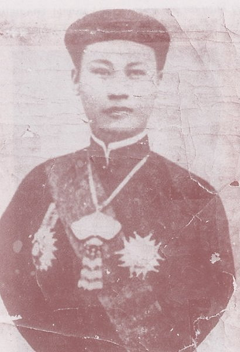

Thành Thái IV
THÀNH THÁI VỚI VIÊN KHÂM SỨ Ngày cái cầu Tràng tiền bắc qua sông Hương được khởi công lần thứ nhất thì viên Khâm Sứ, hôm bắt đầu đặt hòn đá móng cho công trình, đã nói với vua Thành Thái rằng;
- Khi nào cái cầu này gãy thì nhà nước Bảo Hộ sẽ trả lại nước An Nam cho bệ hạ.
Viên Khâm Sứ tưởng nói đùa chơi vậy thôi, nào ngờ năm Giáp Thìn ( 1904 ) một trận bão lớn đã xô ngã nhịp cầu đầu tiên đó xuống sông Hương. Thế là mấy hôm sau, khi gặp lại Khâm Sứ trong một buổi lễ, vua Thành thái hỏi ngay viên Khâm Sứ:
- Thế nào? Cái cầu gãy rồi đó?
Trước câu hỏi " móc họng " của nhà vua, Khâm Sứ Pháp chỉ còn xanh mắt lại, cười nghệt, đánh trống lãng nói sang chuyện khác.
( Theo hồi ký của Đặng Thai Mai )

THÊM DẦU VÀO LỬA Giữa lúc sự giao thiệp của vua Thành thái và viên Khâm Sứ Pháp Levéque càng ngày càng căng thẳng thì xảy ra một việc nhỏ nhưng đã gây xích mích trầm trọng giữa hai người chẳng khác nào lửa cháy lại đổ thêm dầu.
Nguyên một hôm, viên Khâm Sứ Levéque đang tản bộ dạo mát trên cầu Thành Thái ( Huế) thì xe song mã của vua chạy qua cầu. Không hiểu vô tình hay hữu ý, Levéque không cất mũ chào vua. Trên chiếc xe song mã, Uy Vệ Thừa kỵ là người đánh xe, thấy trái mắt, bèn đưa cao roi quần ngựa đánh " bép " một tiếng đến chát tai ngang qua đầu viên Khâm Sứ mà không trúng, khiến cho y tái cả mặt.Có lẽ vì thế mà sau này, vị đại diện cao cấp Pháp quyết tâm tìm đủ mọi cách để b hạ bệ vua Thành Thái cho kỳ được
( theo Lê Thanh Cánh)

Vợ vua Thành Thái
BÀI THƠ CHÂU PHÊ
BẢN ÁN SÁT NHÂN
Cậu Hai Hót là một thanh niên đẹp trai, có tài tán tỉnh, nhiều bà đã dâng cả tình lẫn tiền. Có lần vua Thành Thái cho vời cậu vào Đại Nội thử tài, cậu đã thắng, nhà vua phải thưởng ba lạng bạc sau khi Hai Hót lừa được vua để vua cho hút một điếu thuốc trà.
Sau đó, cậu ta xuống chợ Bao Vinh " hót " được một chị lái đò khá xinh. Chị này mời Hai Hót xuống đò ăn uống và cho biết chòng chị đi vắng chiều tối mới về. Không ngờ anh chồng về nửa chiều, bắt gặp quả tang Hai Hót thông dâm với vợ mình. Sẵn cái cọc chèo trong tay, anh ta đánh cho Hai Hót một vố vào đầu chết tươi.
Huyện kết án anh lái đò 15 năm khổ sai. Án trình lên tỉnh Thừa Thiên giảm xuống 10 năm khổ sai, đưa lên bộ Hình lại giảm xuống 5 năm.
Sau khi xem hồ sơ, vua Thành Thái thấy anh lái đò đáng được tha. Nhà vua phê vào bản án 4 câu Kiều, chắp lại thành một lời phán quyết sâu sắc:
- Hại một người, cứu muôn người. Anh hùng đoán giữa trần ai mới già Mệnh trời mà cũng quyền ta Thấu tình đạt lý ta tha cho về